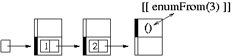

As of v1.3, lists have been completely reimplemented in a way that is far more efficient than the previous implementation. This document describes the new list implementation structure, and how you can write functoids to take advantage of the new structure to be more efficient.
If, instead, you don't actually care about the new list structure, but you just want your now-broken code to compile again, jump down to How to get away with being ignorant of the new List structure.
List<T> = pointer to a Cache<T>
OddList<T> = pair< T, List<T> >
Cache<T> = variant{ Fun0< OddList<T> >
or OddList<T> }
Pictorially,
template <class T> class List {
IRef< Cache<T> > rep;
};
template <class T> class OddList {
T first;
List<T> second;
};
template <class T> class Cache {
enum { UNCACHED, CACHED } state;
Fun0< OddList<T> > fxn; // valid in the "uncached" state
OddList<T> value; // valid in the "cached" state
};
List<int> l = enumFrom(1); cout << head(l) << endl;After executing that, here is a picture of memory, where the variable
l is represented by the little box at the left:
cout << head(tail(l)) << endl;Here is what happens:
tail(l). Since l's
Cache is in the "cached" state, we simply return the next
node of the list (l.rep->value.second).head() on that result. Since this is an "uncached"
Cache, we must execute the function to get the value, and
then return it (value=fxn(); state=CACHED; return
value;)|  |
OddLists are used for efficiency. Consider
List<T> l = something(); head(l);In order to evaluate
head(l) (or tail(l) or
null(l)) we must see if the Cache is in the
"cached" state, and if not, call the fxn to produce the
value.
Now consider
head( cons(1,NIL) );If
cons() were to return a List, then
head() would be forced to check to see if the
Cache were in the "cached" state before producing a value,
since that's how we just saw taking the head of a List
works. However clearly that is unnecessary in this instance;
cons() always produces a "cached" value, as C++ is a
strict (non-lazy) language, and by passing parameters to
cons(), we have already evaluated the "value" of the list
node being produced. As a result, rather than have cons()
return a List, it returns an OddList.
OddLists have exactly the same interface as lists, but
they are more efficient (at the opportunity cost of always having their
first element be non-lazy).
These structures matter most when writing recursive list functoids.
Consider, for example, Map written in the old style (where
everything is a List):
struct Map {
template <class F, class L>
struct Sig : public FunType<F,L,
List<typename F::template Sig<typename L::ElementType>::ResultType> > {};
template <class F, class T>
List<typename F::template Sig<T>::ResultType>
operator()( const F& f, const List<T>& l ) const {
if( null(l) )
return NIL;
else
return cons( f(head(l)), curry2( Map(), f, tail(l) ) );
}
};
Note that the call to cons() takes two parameters, of these
types
typename F::template Sig<T>::ResultType (the list element type, let's call it "E" for short) binder1and2of2<Map,F,List<T> > // what curry2() returns (a zero-argument functoid that returns a List<E>)The second argument type is non-ideal.
cons() will return
an OddList which contains an E and a pointer
to a Cache, but that Cache's thunk will be
ugly. Recall that Cache thunks are functions that return
OddLists, but we have passed a function that returns a
List to cons(). As a result, we have to
create a new thunk, which stores a reference to the one passed (call it
"f"), whose body is
return f().force();This makes the types work out, by transforming a function-that-returns-a-List into a function-that-returns-an-OddList, but it has to use extra space and time to do it.
Now consider Map written to return an OddList:
struct Map {
template <class F, class L>
struct Sig : public FunType<F,L,
OddList<typename RT<F,typename L::ElementType>::ResultType> > {};
template <class F, class L>
OddList<typename RT<F,typename L::ElementType>::ResultType>
operator()( const F& f, const L& l ) const {
if( null(l) )
return NIL;
else
return cons( f(head(l)), curry2( Map(), f, tail(l) ) );
}
};
Now everything works nicely on the cons() end of things;
curry2() creates the right type of functoid to pass to
cons(), since Map has the "right" return
type. There is no more "impedence mismatch" at the recursive call.
Note also that we've changed the type of Map's second
parameter; rather than take only Lists, we take
L, which could match an OddList or a
List. This way, calls to
map( f, cons(1,NIL) );work, and we do not "waste" the known "cachedness" of the first element of this list. Transforming functions that take
Lists into
functions that take Ls (where L is a template
parameter) is nearly the same as writing two overloaded versions of the
function--one that works on OddLists, and one that works
on Lists.
There's a great paper about adding laziness to strict languages, "How to add laziness to a strict language, without even being odd", which explains where we got the name OddList from. However, the "odd" lists described in that paper always evaluate "one too far ahead" in a list, whereas FC++'s OddLists effectively have "even" tails, which means only the original call is too eager; the recursive calls are fine. Thus, the example from that paper:
cutoff( 5, map( sqrt, countdown(4) ) );returns the right answer in FC++. The only time FC++ is too eager is in the edge case; this code
cutoff( 0, map( sqrt, countdown(-1) ) );throws an exception. We believe that this is "how it should be". C++ is strict, and therefore a call to map should "do work". If you wanted to original call to map to be lazy, you would have written
Listthat is, you would have curried the first call to make it lazy. Indeed, the code above works fine in FC++, returning the empty list.l = curry2( map, sqrt, countdown(-1) ); cutoff( 0, l );
Let's move on to more pragmatic issues. Lists and OddLists both support
the same external interface; here are things you can do with an
L:
L l; // L may be List or OddList head(l); null(l); tail(l); // always returns List cons(3,l); // always returns OddList l.head(); l.tail(); l.operator bool(); // !null(l) // The new stuff l.force(); // return an OddList of me l.delay(); // return a List of me // There are also implicit conversions between OddList and List
List actually supports a little more functionality than
OddList does (it contains the iterator interface, both to make
a list from a pair of iterators, and to use the begin() and
end() member functions), but for the vast majority of
tasks, the two are completely interchangeable.
If all you care about is making broken code compile; here's the quickie guide to how to fix broken code. Say you'd written this, which works with pre-v1.3 FC++:
struct SomeFunc {
template <class L>
struct Sig : public FunType<L,L> {};
template <class T>
List<T> operator()( const List<T>& l ) const {
// probably a more interesting body
return l;
}
} some_func;
int main() {
some_func( cons(1,NIL) ); // compiler error
}
and have been annoyed to discover that it gives a compiler error with
the new version of the library:
tmp2.cc: In function `int main()': tmp2.cc:20: no match for call to `(SomeFunc) (fcpp::OddListThe solution is simple; the call should be)'
some_func( cons(1,NIL).delay() );
More generally, when the compiler tells you that you have an
OddList, and you just want a List, call
delay() on it and all will be well.